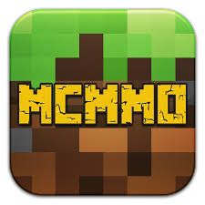

mcMMO
Overview
mcMMO is a leveling plugin that makes your tools and abilities stronger as you use them more. As you hit milestone levels, like level 50, 100, 200, etc, you unlock more abilities and upgrade existing abilities.
Important Commands
- /mcrank - Shows your ranking in skill levels compared to other players.
- /[skillName] - Shows an overview of the skill, and what unlocked abilities do.